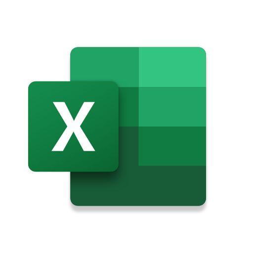
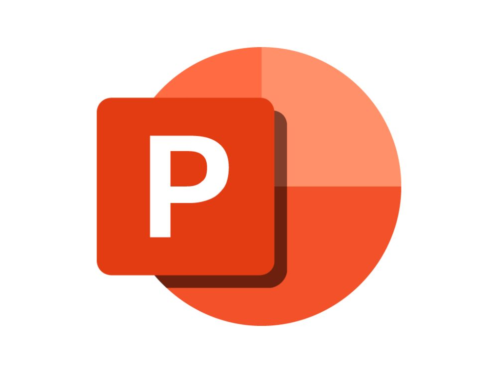
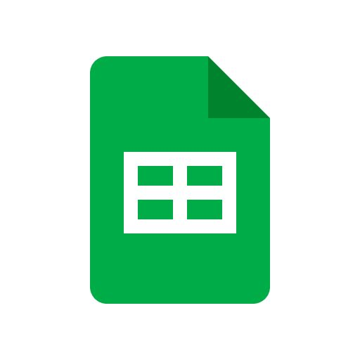
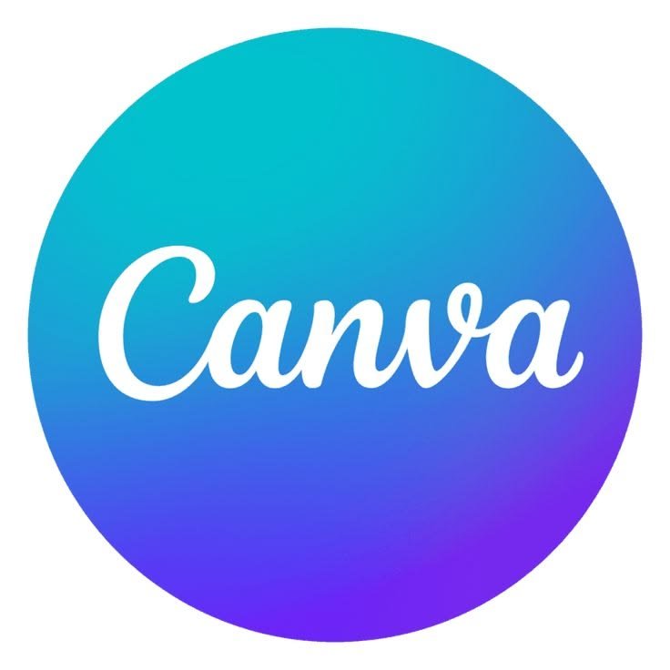

Central Java · Indonesia
Hi, I'm Wahyu.
S1 Administrasi Bisnis
</>

@rahmadwahyuudi
Available
Central Java · Indonesia
S1 Administrasi Bisnis
Sedikit latar belakang dan perjalanan profesional saya.
Saya lulusan Administrasi Bisnis dari Universitas Diponegoro (IPK 3,49/4,00) dengan pengalaman di bidang administrasi, kerja tim, dan manajemen waktu yang diperoleh melalui pengalaman kerja, magang, dan organisasi. Memiliki kemampuan dalam mengelola tugas administratif, berkolaborasi dalam tim, serta menyelesaikan pekerjaan sesuai tenggat waktu. Bersemangat untuk belajar, memiliki keterampilan komunikasi dan pemecahan masalah, serta tertarik pada bidang bisnis dan operasional, dengan motivasi untuk menerapkan dan mengembangkan keterampilan secara profesional.
Portofolio riset, perencanaan strategi, dan pengelolaan operasional.


Memiliki pengalaman magang di Solo Technopark pada Divisi Program Inkubasi Bisnis, dengan tanggung jawab mengelola database tenant startup, melakukan pengarsipan dan pemeriksaan kelengkapan dokumen administrasi, serta membantu publikasi kegiatan dan program inkubasi melalui media sosial dan platform digital.

Menjabat sebagai Ketua UPK Bulu Tangkis FISIP dengan tanggung jawab memimpin dan mengoordinasikan pengurus, menyusun arah kegiatan organisasi, membagi tugas, serta memastikan setiap program kerja berjalan sesuai rencana. Turut mengoordinasikan dua program kerja utama, yaitu FISIP Cup dan FISIP Open, mulai dari perencanaan kegiatan, penyusunan anggaran, pembentukan kepanitiaan, koordinasi dengan pihak fakultas, hingga pelaksanaan dan evaluasi acara.

Bekerja full time sebagai barista dengan tanggung jawab menyiapkan berbagai minuman, melayani pelanggan, menjaga konsistensi kualitas produk, mengelola stok bahan, serta membantu operasional kasir. Terbiasa bekerja secara efisien di tengah jam sibuk dengan mengutamakan kedisiplinan, komunikasi, dan kerja sama tim.
Berpengalaman sebagai fotografer olahraga di Fotoyu dengan fokus pada dokumentasi event lari, mulai dari pengambilan foto dan video, penyuntingan, hingga penjualan hasil karya. Berhasil menjual lebih dari 500 foto dan video kepada peserta, serta menangani proses unggah karya, pelayanan pelanggan, dan pengiriman file digital.

Bertanggung jawab dalam fotografi produk celana olahraga, mulai dari pengambilan gambar hingga penyuntingan foto untuk menghasilkan visual yang berkualitas dan menarik bagi kebutuhan pemasaran.
Daftar sertifikasi profesional yang telah saya peroleh.


Tools dan perangkat lunak yang biasa saya gunakan dalam produktivitas & pekerjaan.
Document Processing

Spreadsheet & Data

Presentation Design
Collaborative Writing

Google Sheets

Graphic Design
Video Editing